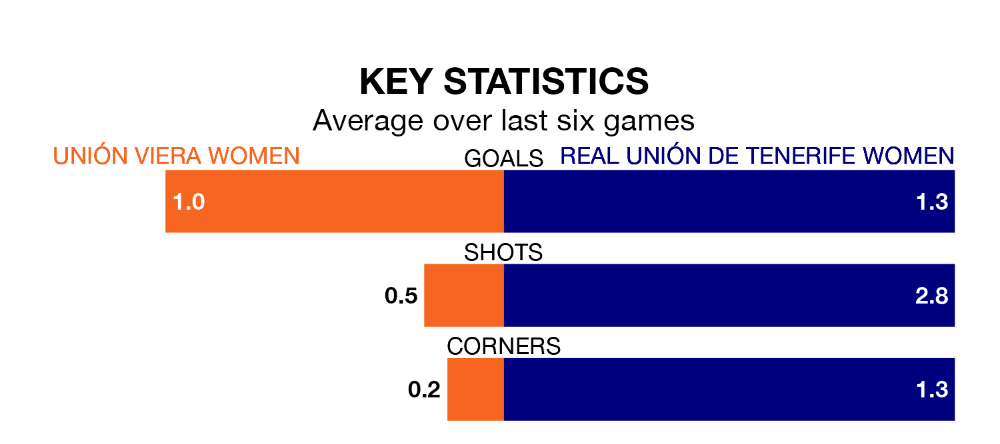

Real Unión de Tenerife Women visit Unión Viera Women on early Sunday on the back of four consecutive wins in Segunda Federación Femenina.
Unión de Tenerife Women have picked up 13 points from their last six games, and they face an Unión Viera side who drew their last match, and have collected five points from the last possible 18.
Unión Viera are zero in the table after 15 games, of which they have won two and drawn five, earning 11 points.
Unión de Tenerife Women are seven places behind the hosts in seventh, with eight wins and four draws putting them on 28 points.
With 15 goals in 15 games so far this season, Unión Viera are the league's joint--8nd-lowest scorers with 1.0 goals per game. And they are conceding more than average, letting in 28 goals at a rate of 1.9 per game.
The away team, meanwhile, are above average scorers, with 1.4 goals per game, compared to a league average of 1.3. They have conceded 0.9 goals per game.
Unión Viera's last match was on January 7, a 1-1 draw against Levante II Women, with getting the goal for Unión Viera.
Unión de Tenerife Women beat CFF Albacete 2-0 last time out, also on January 7, with on the scoresheet.
Updated: 10:50, 10/01/24